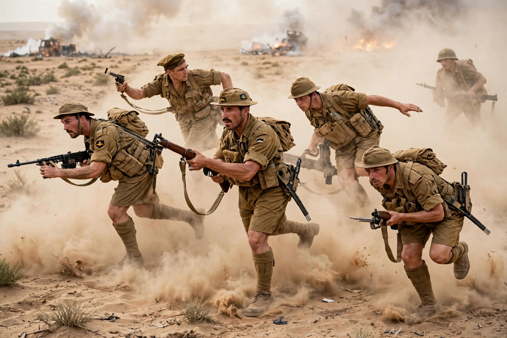

| First battle | 1–27 July 1942 |
|---|---|
| Second battle | 23 October – 11 November 1942 |
| Location | El Alamein, Egypt |
| Belligerents | British Eighth Army (Allies) vs Panzer Army Africa (Axis) |
| Commanders | Bernard Montgomery; Claude Auchinleck (First) vs Erwin Rommel |
| Result | Decisive Allied victory; Axis retreat from Egypt and Libya |
The Battles of El Alamein were two engagements of the Western Desert campaign fought in 1942 near the Egyptian railway halt of El Alamein, where the coastal plain narrows between the Mediterranean and the impassable Qattara Depression. The First Battle of El Alamein (July 1942) halted the final Axis advance into Egypt by Erwin Rommel's Panzer Army Africa. The Second Battle of El Alamein (23 October – 11 November 1942), fought by General Bernard Montgomery's Eighth Army, broke the Axis line and forced a retreat across Libya — the first major, decisive land victory for the Allies over the Axis and a turning point of the war.
After the fall of Tobruk in June 1942 Rommel drove deep into Egypt toward Alexandria and the Suez Canal. The Eighth Army fell back to the El Alamein position, the last defensible line before the Nile Delta. In July, General Claude Auchinleck stopped Rommel's attacks in a month of attritional fighting; both sides then built up for a decisive battle, with supplies — especially fuel, crippled by Allied air and naval interdiction from Malta — favouring the British.
Montgomery, who replaced Auchinleck in August, amassed some 195,000 men and over 1,000 tanks against Rommel's roughly 116,000 men and 547 tanks. After repelling Rommel's attack at Alam el Halfa, Montgomery struck on the night of 23–24 October with a massive artillery barrage (Operation Lightfoot). Infantry and engineers cleared lanes through vast minefields — the "Devil's gardens" — while deception plans (Operation Bertram) disguised the point of attack. Days of grinding "crumbling" battles followed; on 2 November Operation Supercharge broke through, and by 11 November the Axis army was in full retreat, having lost some 59,000 men killed, wounded or captured, 500 tanks and most of its artillery.
Days later the Anglo-American Torch landings in Morocco and Algeria caught the Axis between two fronts; by May 1943 all Axis forces in North Africa had surrendered in Tunisia. Churchill famously wrote: "Before Alamein we never had a victory. After Alamein we never had a defeat."
This article is a recreation from memory for the muse-webcrawl project.